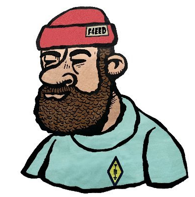

Calques GeoJSON (déplacer ici)
Mode sombre
Département de la Loire
Zoom sur une commune :
-- Choisir une commune --
Gestion des risques
Associations Agréées de Sécurité Civile
Départements de Corse
Zoom sur une commune :
-- Choisir une commune --
Légende :
– aucun calque actif –

Déplacez la souris sur la carte...